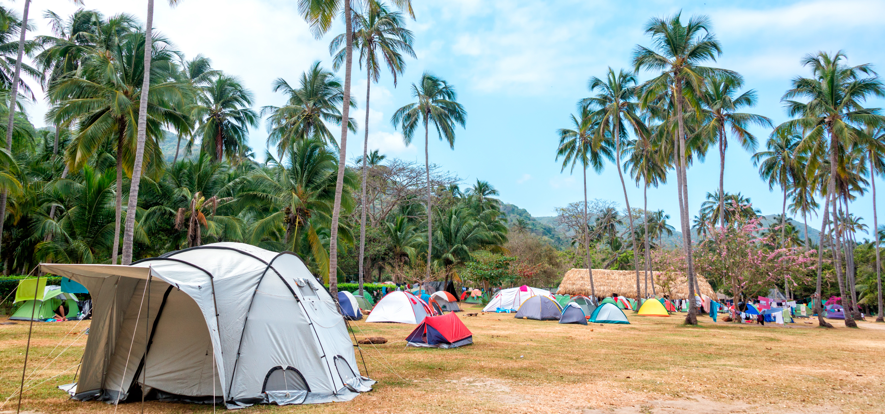
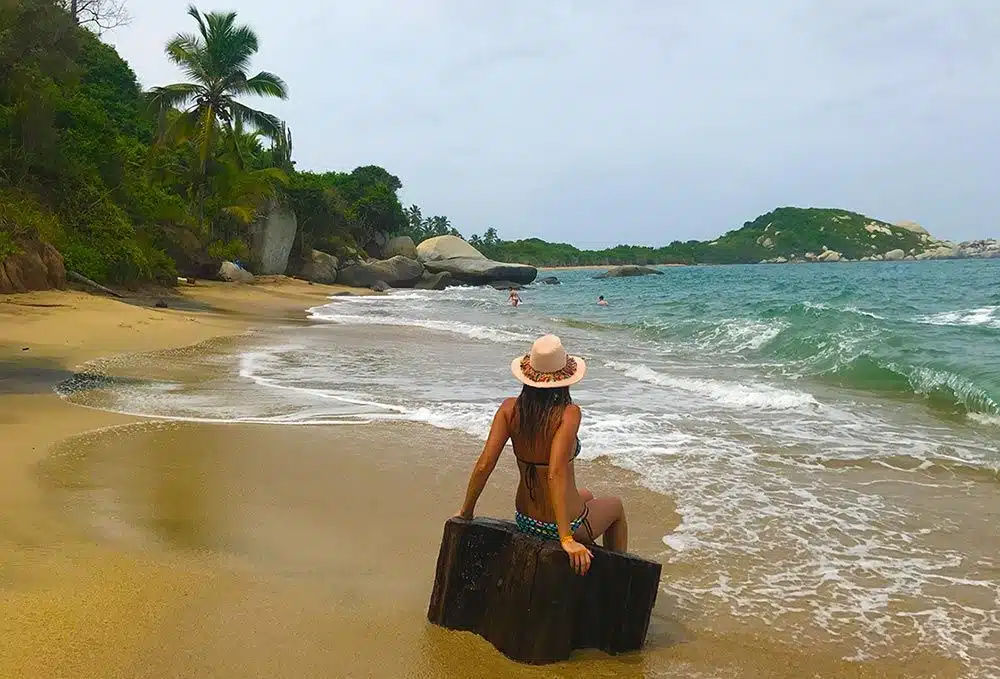
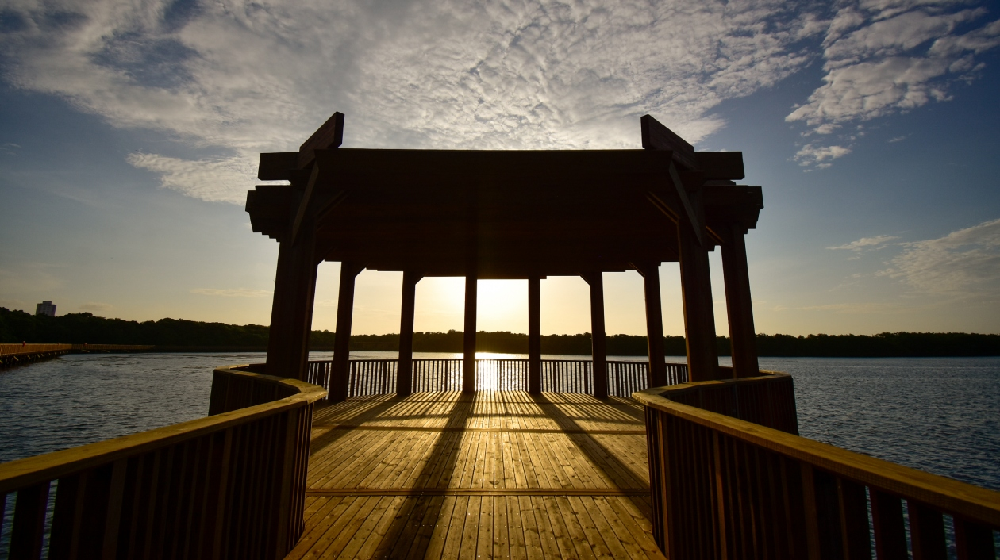
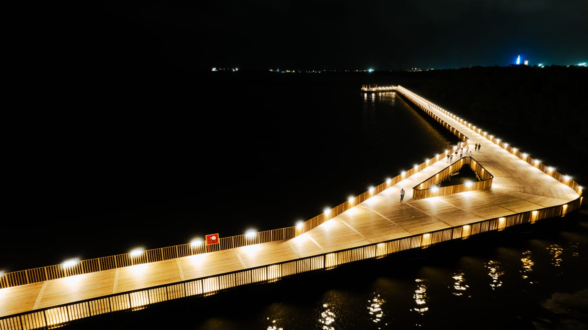
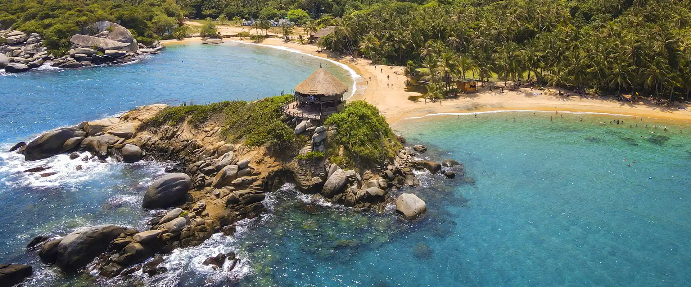
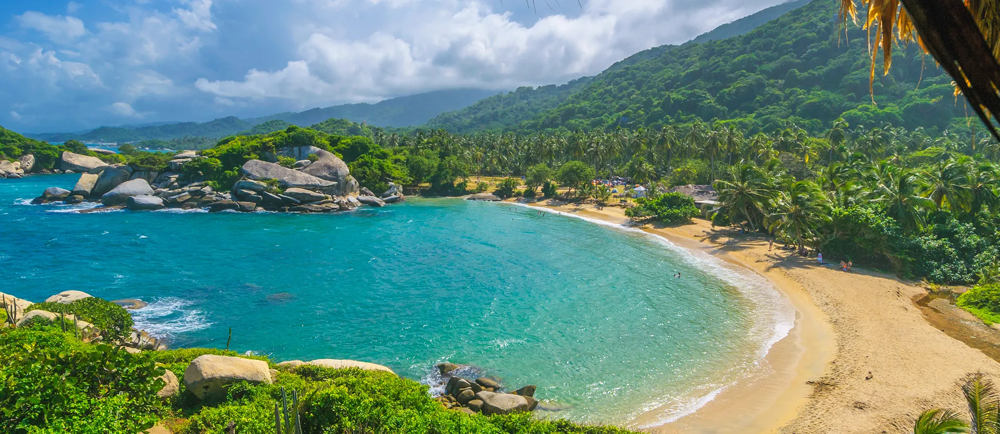
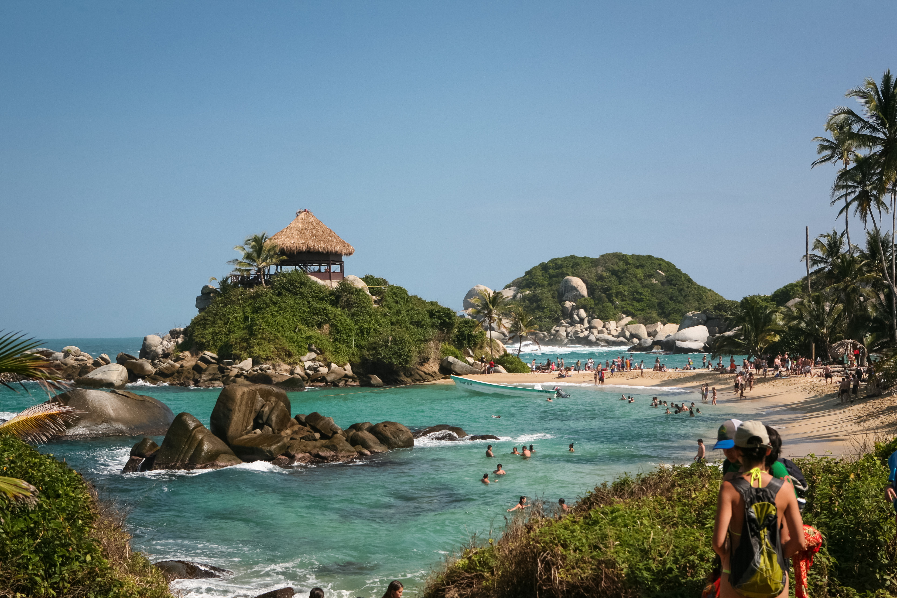

Ven y descubre los bellos paisajes, la fauna y la naturaleza tiene reservado Colombia para ofrecerte, sal de la rutina y del ruidoso dia a dia de la ciudad y disfruta de un dia de relajacion acompañado de bellos paisajes.




Es muy importante preservar nuestros puntos ecologicos, en este sentido debemos ser conscientes y acatar las normas para mantener el entorno ecologico en optimas condiciones
Evitar tocar, recolectar o dañar plantas y animales en su hábitat natural.
Utilizar los contenedores adecuados y mantener los espacios limpios.
Caminar solo por las áreas permitidas para preservar la vegetación.
Evitar darles comida para prevenir dependencias y alterar su comportamiento.
Prohibido encender fogatas o usar dispositivos de calefacción.
Mantener a las mascotas bajo control y recoger sus excrementos.
Seguir las indicaciones establecidas para garantizar la seguridad.
Mantener un nivel de ruido bajo para no perturbar la fauna.
Utilizar los recursos naturales de manera consciente.